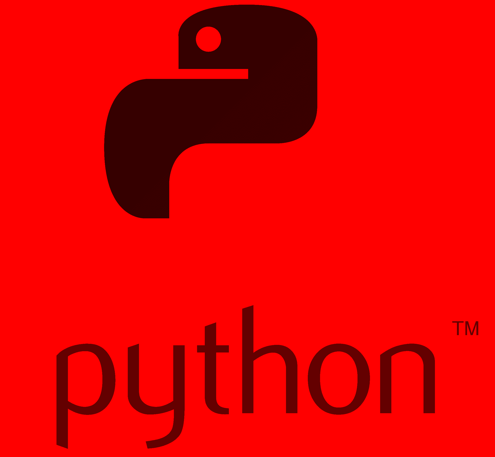
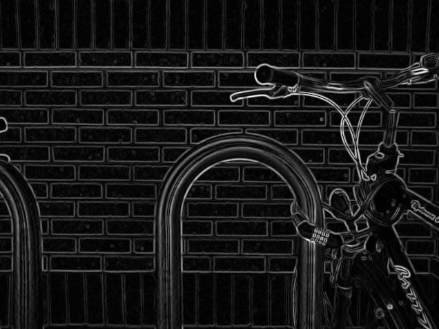
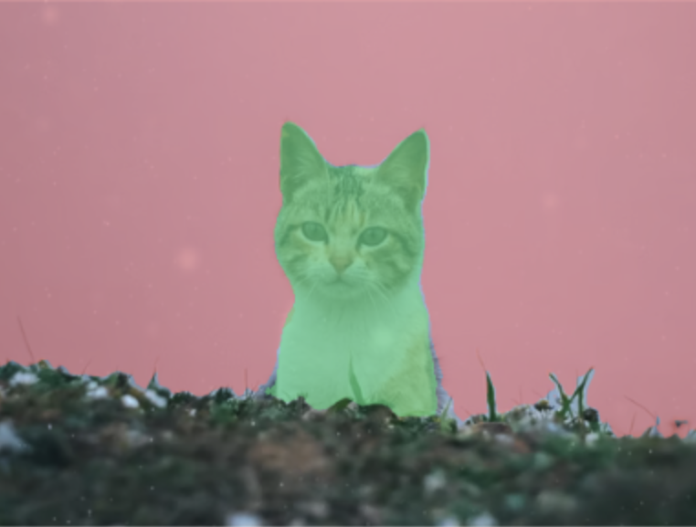
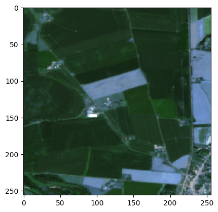
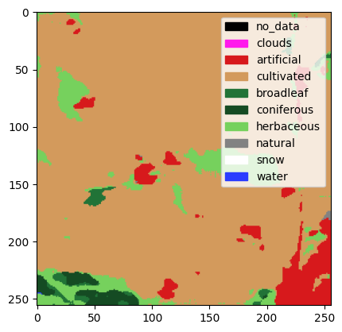
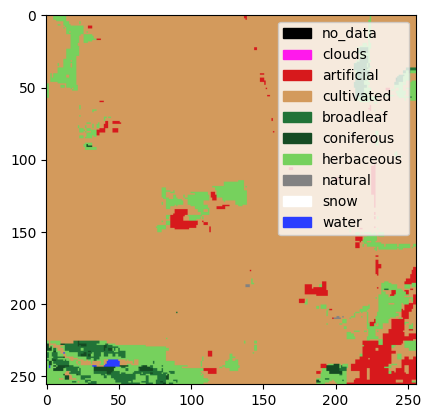
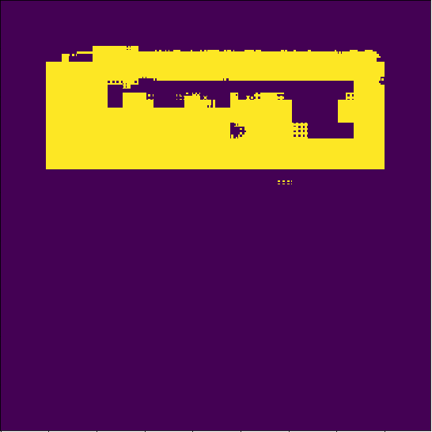
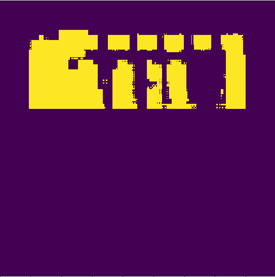

Images
Introduction
Les images sont des données qui sont utilisées depuis longtemps de manière automatique. Une image pour un ordinateur est représentée par un tableau en 2 ou 3 dimensions (images en nuances de gris et images en couleur respectivement). En 2 dimensions, l’image a ainsi une longueur \(L\) et une largeur \(W\) : elle est constituée de \(L \times W\) pixels, chacun associé à une valeur entière comprise entre 0 et 255 (ou parfois à une valeur décimale comprise entre 0 et 1), comme illustré en Figure 1.
Python en nuances de gris avec une faible résolution. La valeur de chaque pixel (entier allant de 0 pour un pixel complètement noir à 255 pour un pixel complètement blanc) figure à l’emplacement de ce dernier.
Une image en couleur est constituée de 3 canaux (RGB pour Red, Green et Blue). Chacun des \(L \times W\) pixels de l’image est ainsi associé à 3 valeurs entières comprises entre 0 et 225 (ou à 3 valeurs décimales comprises entre 0 et 1), comme illustré en Figure 2.

Python en couleurs. L’image du haut correspond à la superposition des trois canaux représentés sur la rangée inférieure.
Le domaine de la vision par ordinateur (computer vision) a vu le jour dans les années 1960 avec le développement des premiers algorithmes cherchant à extraire de l’information d’images. Par exemple, Sobel and Feldman (1973) introduit la méthode suivante pour faire de la détection de contours sur une image \(A\).
On calcule
\[ G_x = \begin{bmatrix} +1 & 0 & -1\\ +2 & 0 & -2\\ +1 & 0 & -1 \end{bmatrix} \star A \quad \text{et} \quad G_y = \begin{bmatrix} +1 & +2 & +1\\ 0 & 0 & 0\\ -1 & -2 & -1 \end{bmatrix} \star A \]
où \(\star\) est l’opérateur de convolution 2-dimensionnel en traitement du signal (illustré en Figure 4).
Alors l’image \(G = \sqrt{G_x^2 + G_y^2}\) fournit une représentation des contours de l’image \(A\). Une illustration de l’application de cette méthode est donnée en Figure 3.


La révolution du Deep Learning
Dans les dernières années, l’apprentissage profond a permis une véritable révolution dans le domaine de la vision par ordinateur (Voulodimos et al. 2018). Les réseaux de neurone ont permis l’introduction de modèles complexes qui parviennent à apprendre et à représenter des données sur plusieurs niveaux d’abstraction, à l’image de la manière dont le cerveau perçoit et comprend les informations multi-modales.
Ainsi, les performance state-of-the-art ont été largement améliorées pour une multitude de tâches différentes : classification d’image, segmentation sémantique, reconnaissance faciale et détection d’objets… Par exemple, dans le domaine de la robotique ou de la voiture autonome, ces modèles ont changé la donne en permettant que certaines opérations d’analyse et de décisions soient néanmoins applicables dans une grande diversité de scénarios.
Réseaux de neurone convolutifs
Une architecture de modèles a joué un rôle particulièrement important dans cette révolution : les réseaux de neurones convolutifs (voir LeCun et al. 1989 pour un des articles fondateurs). Ces réseaux de neurones sont constitués d’un enchaînement de couches convolutives, chacune composée de trois étapes :
- Une étape de convolution utilisant l’opérateur \(\star\) décrit ci-dessus qui transforme un tenseur 3-dimensionnel de taille \((H, W, C)\) en entrée en un tenseur de taille \((H', W', C')\) ou \(H'\), \(W'\) et \(C'\) dépendent de la taille du noyau de convolution choisi ;
- Une étape de détection où une fonction non-linéaire est appliquée au tenseur obtenu en sortie de l’étape de convolution ;
- Une étape de pooling où chaque canal du tenseur en entrée voit sa hauteur et largeur réduite à l’aide une fonction qui remplace chaque valeur par une statistique impliquant les valeurs des pixels voisins (fréquemment, la valeur maximale dans un voisinage rectangulaire : c’est l’opération de max pooling).
La succession de ces opérations est résumée dans la Figure 5

Les tenseurs obtenus en sortie des couches convolutives sont appelés activation maps ou feature maps. Chaque feature map peut s’interpréter comme une carte qui indique les endroits où on peut trouver une feature particulière (par exemple un bord, une texture, une partie d’un objet, etc.) au sein de l’image. Les features pertinentes (c’est-à-dire les coefficients des filtres de convolution utilisés) sont apprises par le réseau de neurones au cours de la phase d’entraînement. On peut voir ces features comme des structures latentes qui combinées ensemble génèrent un objet sur l’image finale.
Les réseaux de neurones convolutifs présentent plusieurs caractéristiques essentielles pour des tâches de vision par ordinateur, qui expliquent en partie leur succès : une invariance (relative) à la translation, la rotation et à l’échelle. Ces caractéristiques permettent aux modèles d’abstraire l’identité d’un objet de détails spécifiques aux images données en entrée tels que la position et l’orientation de cet objet par rapport à la caméra.
Segmentation sémantique
La segmentation sémantique est une tâche de vision par ordinateur qui consiste à associer une étiquette ou une catégorie à chaque pixel d’une image (illustration en Figure 7). Plusieurs architectures de réseaux de neurones convolutifs entraînées sur des gros jeux d’entraînement obtiennent des performances très élevées sur des jeux de données d’évaluation de référence, comme l’architecture DeepLabV3 (Chen et al. 2017). Les principaux frameworks de Deep Learning fournissent des implémentations de modèles de segmentation sémantique (avec ou sans coefficients pré-entraînés) : c’est le cas du package Python torchvision par exemple qui propose une implémentation des modèles DeepLabV3, FCN et LRASPP.



Application à la statistique publique
La statistique publique, et plus largement l’administration, peut désirer tirer parti des méthodes de vision par ordinateur de plusieurs manières. La suite de ce chapitre va développer quelques cas d’usages, non exhaustifs, des données satellites pour la statistique publique. Les cas d’usage sont très nombreux et ne seront pas tous évoqués. Par exemple, pour en savoir plus sur la production des données LIDAR de l’IGN, il est recommandé de lire cette page.
Utilisation de données d’observation satellitaire
Nature de la donnée
Dans le domaine des données d’Earth Observation, qui regroupent en fait différentes sources de données (radars, orthophotographies…), les données photographiques issues de satellites ont une place de choix. Celles-ci permettent d’observer les territoires, que ce soit leur topologie ou leur usage et potentiellement d’en tirer des enseignements à diffuser sous la forme de statistiques publiques. Par exemple, l’utilisation de données satellitaires peut permettre d’améliorer la granularité spatiale et temporelles de statistiques publiées aujourd’hui sur la production agricole (part du territoire cultivé, nature des cultures…).
De manière générale, ces données ont beaucoup de potentiel lorsqu’elles sont utilisées en combinaison avec d’autres sources de données lorsqu’il s’agit de pallier des insuffisances ou des manques concernant les données traditionnellement utilisées pour la statistique publique. Par exemple, Steele et al. (2017) combinent données de satellites et données de téléphonie mobile pour estimer des taux de pauvreté. En France, les départements et régions d’outre-mer sont particulièrement concernés. Les données satellites permettraient d’y combler des imperfections des données administratives. Par exemple, les parcelles cadastrales y sont parfois mal identifiées ou rarement mises à jour. Les données satellitaires peuvent être utilisées pour fiabiliser cette information.
Les données d’Earth Observation présentent des difficultés d’utilisation non-négligeables dans un contexte de production statistique :
- Il faut au moment de la production de la statistique désirée s’assurer que l’on parvient à des résultats statistiquement robustes ;
- Produire des statistiques de manière récurrente à partir d’une source de données demande d’avoir du recul sur le fonctionnement de la chaîne de traitement en production. Comme les données d’Earth Observation ne sont aujourd’hui utilisées que par peu d’instituts statistiques, il est difficile d’avoir un tel recul sans soi-même avoir une chaîne de traitement qui tourne depuis plusieurs années ;
- Pour de nombreuses applications, on souhaite utiliser des images avec une résolution élevée mais aussi exploiter la haute fréquence temporelle de passage de certains satellites. Dans un tel cadre les données d’Earth Observation ont souvent un volume très important. Entraîner des modèles pertinents (les modèles de Deep Learning state-of-the-art sont complexes) demande d’avoir des ressources informatiques adaptées à disposition ;
- Selon les besoins, la résolution disponible peut ne pas correspondre aux besoins de la statistique.
Fournisseurs de données
Des acteurs publient des données satellitaires en open data :
- La
NASAà travers son programme historiqueLandsat. Les dernières générations des satellites Landsat recueillent des images dans une dizaine de bandes spectrales (bandes visibles mais aussi bandes infrarouges) avec une résolution spatiale de 30 mètres (pour les bandes visibles) ; - L’
Agence spatiale européenne (ESA)a lancé le programmeSentinel-2en 2015. Les images des satellitesSentinel-2sont aussi disponibles en open data, sur 12 bandes avec une résolution spatiale de 10 mètres, plus fine que celle des images deLandsat. La périodicité de la couverture des satellitesSentinel-2est relativement faible : ces derniers repassent au-dessus des mêmes zones tous les cinq jours.
Des entreprises privées collectent aussi des images avec leurs propres satellites, parfois avec des meilleures résolutions que les images disponibles en libre accès, ce qui peut être nécessaire en fonction du cas d’usage envisagé. De manière générale, il y a toutefois un arbitrage à faire entre le détail local des mesures (résolution radiométrique, nombre de bandes spectrales) et la résolution spatiale des images. La richesse des images issues de satellites réside plutôt dans la première dimensions, alors que les orthophotographies par exemple sont à privilégier si on désire une plus haute résolution spatiale.
Pipeline
Le traitement d’images de satellites se divise de manière classique en trois parties (Direction de la recherche et de l’innovation 2018) :
- d’abord vient le pré-traitement des données, qui inclut le stockage, le data managment, le contrôle de la qualité des données, l’inclusion d’autres sources et l’identification d’outils appropriés pour l’analyse.
- Ce pré-traitement est suivi par une phase d’analyse, où l’on définit les indicateurs à calculer, les données à utiliser et où l’on applique la méthode analytique choisie.
- Enfin, au cours de la phase d’évaluation, on collecte et on interprète les résultats de l’analyse.
Des méthodes historiques existent pour analyser des images de satellites (pour in fine produire des statistiques). Par exemple, l’utilisation de modèle physiques pour prédire la valeur d’une variable d’intérêt à partir de l’observation empirique de certaine bandes, ou encore de méthodes d’analyse d’images traditionnelles où des informations spatiales, relatives à des motifs, à des textures, etc. sert à segmenter l’image sous supervision humaine (OBIA). Récemment, le Machine Learning (et en particulier le Deep Learning) a fourni des outils d’analyse puissants facilement applicables aux images satellites.
Cas d’usage
Les cas d’usage potentiels d’utilisation de ces données pour la statistique publique touchent de nombreux thèmes, qui incluent :
- La supervision des forêts, de l’agriculture, des masses d’eau ;
- L’urbanisation et les infrastructures ;
- La pollution environnementale et la qualité de l’air atmosphérique ;
En particulier, l’analyse d’images satellite peut permettre de calculer des indicateurs comme la proportion de surface agricole en agriculture intensive ou en agriculture durable, le pourcentage de masses d’eau présentant une bonne qualité de l’eau ambiante, la couverture forestière dans le cadre d’une gestion forestière durable, la perte nette permanente de forêts, etc.
Plusieurs cas d’usage précis ont été ciblés aujourd’hui pour la statistique publique en France et donnent ou vont donner lieu à des travaux expérimentaux.
Un des cas d’usage identifiés depuis un moment déjà est l’utilisation d’images satellites pour calculer les statistiques sur l’occupation et l’usage des sols sur le territoire français. Aujourd’hui, ces statistiques sont tirées de l’enquête
Teruticonduite par le Bureau des statistiques structurelles environnementales et forestières du SSP (Ministère de l’Agriculture).Un échantillon de points est observé sur le terrain sur un cycle de 3 ans permettant d’estimer l’occupation des sols avec une précision qui reste satisfaisante à l’échelon départemental. L’échantillonnage des points se fait à partir de sources multiples, dont des données satellitaires (satellite SPOT) et des orthophotographies de l’IGN. En outre, une phase de validation des résultats de l’enquête est réalisée à partir d’une couche d’exploitation du sol issue de données de Sentinel-2 et réalisée de manière automatique est le Centre d’Etudes Spatiales sur la BIOsphere à Toulouse.
Des travaux sont actuellement en cours pour encore davantage améliorer la phase d’échantillonnage à l’aide d’images satellitaires. En outre, une méthode automatique donnant des couches d’exploitation des sols avec une précision suffisante pour les besoins de la statistique publique pourrait permettre de diffuser des statistiques plus régulièrement qu’avec l’enquête Teruti et avec une granularité territoriale plus fine.
Les parcelles cadastrales sont parfois mal identifiées dans les départements et région d’outre-mer, en particulier en Guyane et à Mayotte. Or ces parcelles sont utilisées pour des tirages d’échantillon par l’Insee, pour le recensement de la population par exemple.
Ici encore, des modèles de segmentation retournant des couches d’exploitation et d’usage des sols peuvent être utilisés pour consolider l’information disponible sur les parcelles cadastrales. Dans le cadre d’une expérimentation, un modèle de segmentation
U-Net(Ronneberger, Fischer, and Brox 2015) pré-entraîné sur le jeu de donnéesImageNeta été fine-tuné sur un sous-échantillon du jeu annotéS2GLC(Sentinel-2 Global Land Cover). Ce modèle prend en entrée une image satellite et renvoie une prédiction pixel par pixel de la catégorie de terrain (en 10 classes), comme illustré en Figure 8. S’il est assez précis sur la catégorie surfaces artificielles et construction, ses prédictions pourraient servir à consolider les données cadastrales.



- L’enquête sur la structure des exploitations agricoles (Bureau des statistiques structurelles environnementales et forestières du SSP) dont la prochaine édition aura lieu en 2023 pose des questions sur les vergers. Il n’existe aujourd’hui pas de source administrative permettant de consolider les résultats de l’enquête sur cette thématique.Ainsi, un projet d’expérimentation utilisant des orthophotographies pour dénombrer le nombre d’arbres et la surface associée est envisagé. La librairie
DeepForestpropose des modèles pré-entraînés pour faire de la détection d’arbres (voir Figure 9) et pourra servir de point de départ pour cette expérimentation.
DeepForest.
Plusieurs questions méthodologiques essentielles se posent lorsqu’on exploite des données satellitaires grâce à des méthodes de Deep Learning :
- Architectures des modèles
- Utilisation des différentes bandes
- Pré-traitements sur les images : détection et suppression de nuages, amélioration de la résolution ;
- Transférabilité des modèles : est-ce qu’un modèle entraîné sur des images provenant d’un satellite fonctionnera correctement avec des images provenant d’un autre satellite ? Ou avec un réentraînement minimal ?
Un enjeu majeur est l’obtention de données annotées (même si le pré-entraînement de modèles sur des jeux de données énormes réduit le besoin de données annotées pour la tâche considérée). Pour des tâches de prédiction de l’utilisation du sol, on peut par exemple mobiliser la base de données géographiques CORINE Land Cover, un inventaire biophysique qui fournit une photographie complète de l’occupation des sols, à des fréquences régulières.
Elle est issue de l’interprétation visuelle d’images satellitaires, avec des données complémentaires d’appui. Les classes d’occupation correspondent à une nomenclature comportant 44 postes.
La reconnaissance optique de caractères
L’administration française a été historiquement une grande productrice de fichiers sous format papier. Même si la numérisation des sources de collectes administratives réduit le volume de production papier, ce dernier mode de collecte est encore d’usage. Afin de réduire le temps de numérisation, il est donc utile de mettre en oeuvre des routines automatisées. Dans la même veine, l’administration a longtemps mis en oeuvre des publications (tableaux ou graphiques) sous format papier. Être en mesure de valoriser ce patrimoine de connaissance est un enjeu pour la recherche.
La reconnaissance optique de caractères (souvent abrégée par OCR pour Optical character recognition) désigne la tâche de conversion de texte manuscrit ou imprimé en texte encodé par un ordinateur. C’est une tâche essentielle pour exploiter des documents disponibles sous la forme d’images numériques.
Développer son propre moteur d’OCR est une tâche très complexe mais heureusement des moteurs open source existent. Tesseract est un logiciel pour la reconnaissance de caractères open source depuis 2015. Tesseract offre plusieurs moteurs depuis sa version 4 : en plus du moteur historique, un moteur basé sur le Deep Learning (réseaux de neurones LSTM) est aujourd’hui disponible.
Application : extraction d’informations de documents scannés photographiés
Des documents scannés ou photographies peuvent souvent constituer une source d’information précieuse pour la production de statistiques publiques.
Par exemple, la Direction des Statistiques d’Entreprises (DSE) à l’Insee effectue de manière périodique un profilage des groupes de sociétés. Pour la statistique publique la notion d’entreprise est souvent associée à une définition purement juridique, c’est-à-dire à la notion d’unité légale inscrite au répertoire Sirene. Toutefois, aujourd’hui certaines unités légales sont détenues par d’autres et peuvent ainsi perdre une partie de leur autonomie. Le profilage consiste à identifier au sein des groupes les entreprises au sens économique, puis à collecter et calculer des statistiques sur ces nouveaux contours.
La plupart des catégories de sociétés ont l’obligation de déposer annuellement leurs comptes sociaux au Registre du commerce et des sociétés (RCS), afin d’en garantir la transparence. Les documents à déposer incluent les comptes annuels (bilan actif et passif, compte de résultats et annexes), le rapport de gestion pour les sociétés cotées, les documents portant sur l’affectation du résultat, etc. Dans le cas où une société possède des filiales ou participations au moins à hauteur de 10% du capital, elle doit inclure dans ses comptes sociaux un tableau des filiales et participations (voir Figure 10) offrant une vision financière synthétique des différentes filiales et participations détenues. Ce tableau est très utile pour consolider le profilage d’un groupe, car il centralise des informations qui sont difficiles à obtenir par ailleurs.
Aujourd’hui, les profileurs de la DSE utilisent les comptes sociaux de manière manuelle. Ils récupèrent les comptes sociaux, souvent sous la forme de documents scannés, depuis une interface de programmation mise à disposition par l’Institut National de la Propriété Industrielle (INPI) et pour chaque groupe qui les intéresse, cherchent eux-mêmes l’emplacement du tableau des filiales et participations dans le document puis récupèrent les informations pertinentes pour la consolidation. La reconnaissance optique de caractères peut permettre de traiter automatiquement (au moins en partie) les comptes sociaux, ce qui permettrait à la fois de dégager du temps aux profileurs pour des activités à plus forte valeur ajoutée, mais aussi de consolider plus de comptes.
Une chaîne de traitement complète envisagée pour l’extraction d’un tableaux filiales et participations est décrite ci-dessous :
- On récupère l’exemplaire des comptes sociaux d’intérêt via un appel à l’API de l’INPI ;
- Un document est en général constitué de plusieurs pages. Pour identifier la page sur laquelle se trouve le tableau des filiales et participations, tout le texte de chaque page du document est extrait à l’aide d’un moteur de reconnaissance de caractères. Puis un modèle de forêt aléatoire qui a été entraîné sur des observations annotées à la main prend en entrée la totalité des mots présents sur chaque page, pour renvoyer en sortie une probabilité que le tableau des filiales et participations y soit présent. Pour un document donné, on retient la page avec la probabilité de sortie la plus élevée si cette dernière dépasse un certain seuil fixé empiriquement.
- L’extraction à proprement parler du tableau se fait ensuite en plusieurs étapes :
- D’abord l’image est pré-traitée : elle est remise droite dans le cas où le document a été scanné de travers, les couleurs sont inversées si on repère une zone de l’image où du texte blanc figure sur une zone sombre, etc. ;
- On applique ensuite le modèle de segmentation
TableNet(Paliwal et al. 2020) à l’image, qui retourne deux masques : le premier masque indique l’emplacement des tableaux au sein de l’image, et le deuxième indique l’emplacement des colonnes au sein de l’image (voir Figure 11). Ce modèle a été entraîné à partir du jeu de données annotées Marmot disponible en libre accès sur Internet et optionnellement à partir de données supplémentaires des comptes sociaux annotées à la main ; - Les masques sont post-traités dans l’étape suivante où des artefacts sont retirés, la table et les colonnes sont remplis lorsque des trous apparaissent sur les masques, etc. ;
- Le contenu de chaque colonne est extrait (chaque caractère accompagné de sa position sur l’image) grâce à un moteur de reconnaissance optique de caractères (par exemple Tesseract) ;
- Les colonnes sont alignées pour reconstituer la table aussi bien que possible ;
- On identifie les colonnes de la table utile pour la consolidation des comptes grâce à l’utilisation d’expressions régulières et d’une distance textuelle ;
- Le tableau avec les noms de colonnes nettoyés est enfin exporté (par exemple en format csv).


Extraction d’information de tickets de caisse
L’enquête Budget des Familles, réalisée par la Direction des statistiques démographiques et sociales (DSDS) de l’Insee, repose traditionnellement sur la collecte de tickets de caisse dont les champs sont manuellement repris et numérisés par les enquêteurs1. Toutefois, il existe aujourd’hui des méthodes pour automatiser cette extraction en utilisant des moteurs de reconnaissance optique de caractères.
Une première idée envisageable est d’utiliser un moteur d’OCR pour récupérer ligne par ligne le texte figurant sur un ticket de caisse puis d’extraire l’information sous forme structurée avec une approche basée sur des règles. Les tickets de caisse se ressemblant en général beaucoup, cette approche fonctionne convenablement sur cette tâche quelque soit le ticket, mais elle présente tout de même des défauts de généralisabilité. Une approche Deep Learning end-to-end est préférable, même si elle nécessite des données annotées. De telles méthodes ont été testées dans le cadre de compétitions (notamment sur les jeux de données SROIE 2019 et Cord) et ont donné de bons résultats.
References
Footnotes
Plus précisément, les ménages enquêtés se voient confier un carnet de dépenses qu’ils doivent remplir pendant une certaine période. Pour certaines dépenses les carnets sont renseignés à la main par un membre du ménage. Pour d’autres, le ménage a la possibilité d’inclure dans le carnet des tickets de caisse. Jusqu’à présent les enquêteurs étaient chargés de recopier le contenu des tickets de caisse pour rendre ces données exploitables.↩︎